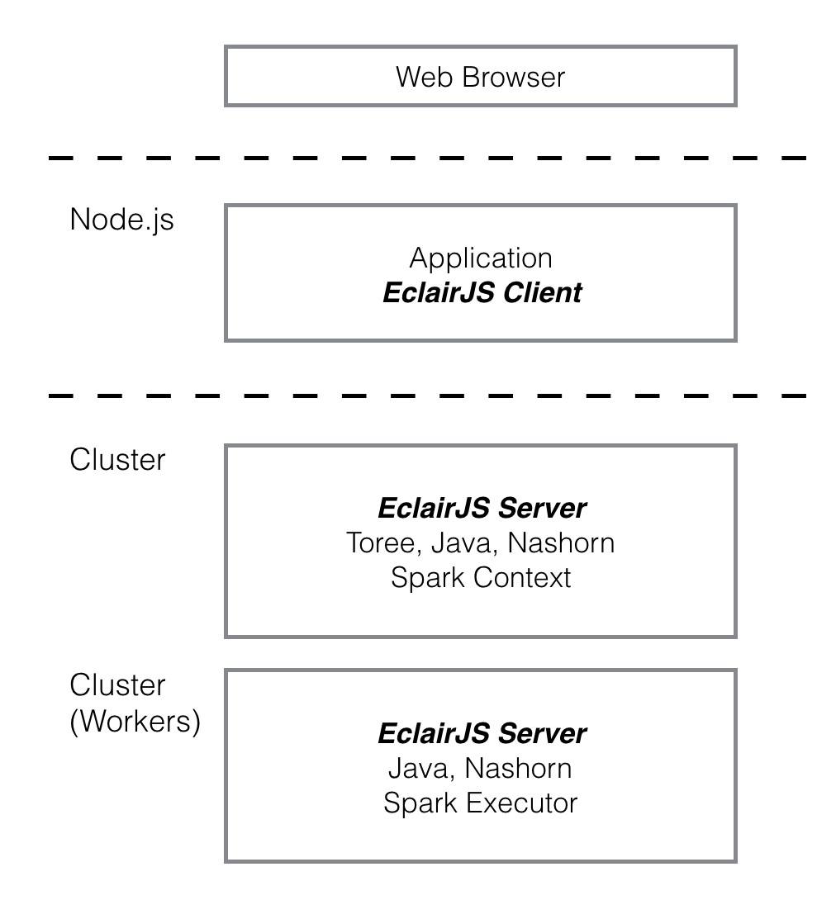

Welcome to EclairJS
Web applications are looking to incorporate increasingly sophisticated analytics and more types of data. The Apache Spark engine is a fast and general purpose engine for analytics and large-scale data processing which web application runtimes like Node.js can take advantage of using EclairJS.

EclairJS Client & Server
EclairJS has a client component and a server component. The EclairJS Client enables Node.js and JavaScript developers to program against Apache Spark. It provides a Spark API in Node.js and JavaScript, and enables Node.js applications to run remotely from Spark.
The EclairJS server is responsible for exposing the Apache Spark programming model to JavaScript and for taking advantage of Spark's distributed computing capabilities. In addition to supporting the EclairJS client, the Server component supports Jupyter Notebooks, and a REPL.
Community etc.
The EclairJS project has a Slack chat channel and a group list. If you are interested in joining these, or in any other aspects of the projects, email us at info@eclairjs.org.
The project maintains an issue list for tracking bugs and monitoring the progress of requested features.
Note that the EclairJS project used to be represented through two separate projects: EclairJS-Node and EclairJS-Nashorn. The EclairJS project has absorbed these former projects as EclairJS Client and EclairJS Server respectively. Going forward and with EclairJS's support for Apache Spark version 2.0, all work will now take place under EclairJS although the older repositories will remain for a while: EclairJS-Node, EclairJS-Nashorn.
Want to find out more? Visit the EclairJS project on GitHub where you will find examples and more documentation or check out some of our recent presentations:
- Upcoming
- Putting a Spark in Web Apps, Apache Big Data Europe, 11-14-16
- Past
- dW Open Webinar: EclairJS. 11-09-16
- BayNode Meetup, 11-01-16
- Running Apache Spark Applications With Node.js on IBM Bluemix
- Spark Summit presentation, 06-07-16
- Spark.tc blog, part 1
- Big Data +, Cambridge Meetup, 03-30-16
- Apache Spark, Raleigh Meetup, 02-09-16